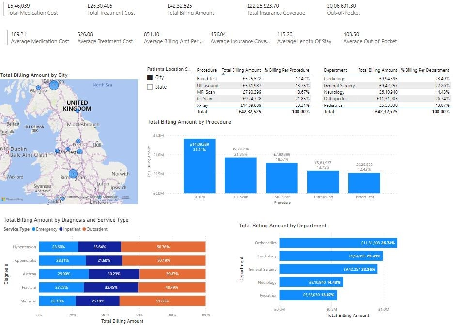

Healthcare Data Analysis With Power BI
Analyzed a comprehensive healthcare dataset approximately 5,000 entries comprising patient information and billing records. Leveraged DAX (Data Analysis Expressions) to create custom measures and calculated fields. Identified crucial trends and key performance indicators (KPIs) related to billing costs across various services, departments, and insurance coverage.
